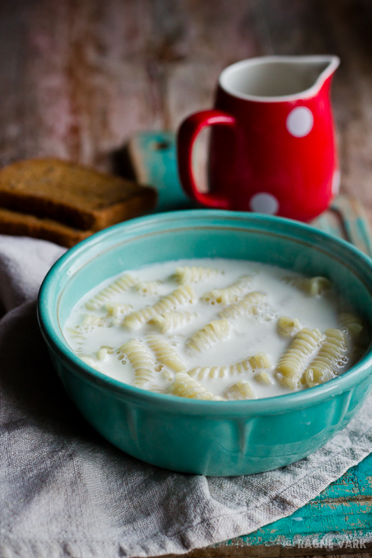

Algretsepti link
Makaroni-piimasupp
|  |
| Koostisosa |
Kogus |
| Piim |
7.5 dl |
| Makaronid |
100g |
| Vesi |
5dl |
| Sool |
1tl |
| Või |
1sl |
| Suhkur |
- Kuumuta potis vesi keemiseni, lisa sool ning makaronid. Keeda 5-7 minutit, kuni makaronid on peaaegu pehmed.
- Lisa piim, sega läbi ja kuumuta veel paar minutit, kuni makaronid on valmis.
- Maitsesta supp suhkruga, sega juurde või ja serveeri.